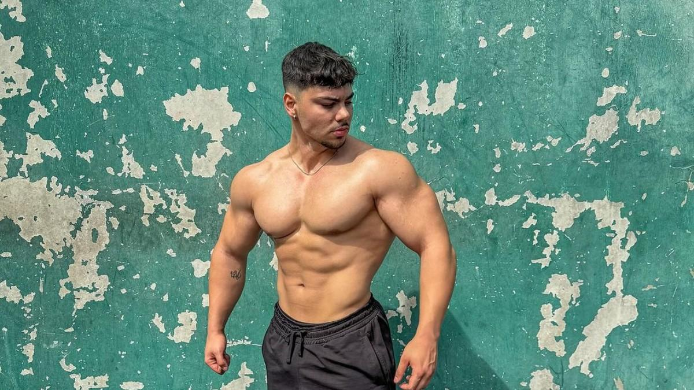

Así ha conseguido su increíble físico Andoni Talledo, joven promesa del culturismo español que ya gana campeonatos
Saniago Ruiz 28/12/2023
Andoni Talledo es uno de los nombres propios del culturismo español. Andonifitness, que su nombre de usuario en Instagram, es muy conocido por las personas que buscan aumentar su masa muscular y les gusta este tipo de deporte. En una reciente entrevista ha hablado sobre su comienzo en el culturismo, así como los entrenamientos y la dieta que sigue para alcanzar su físico
Seguir leyendo